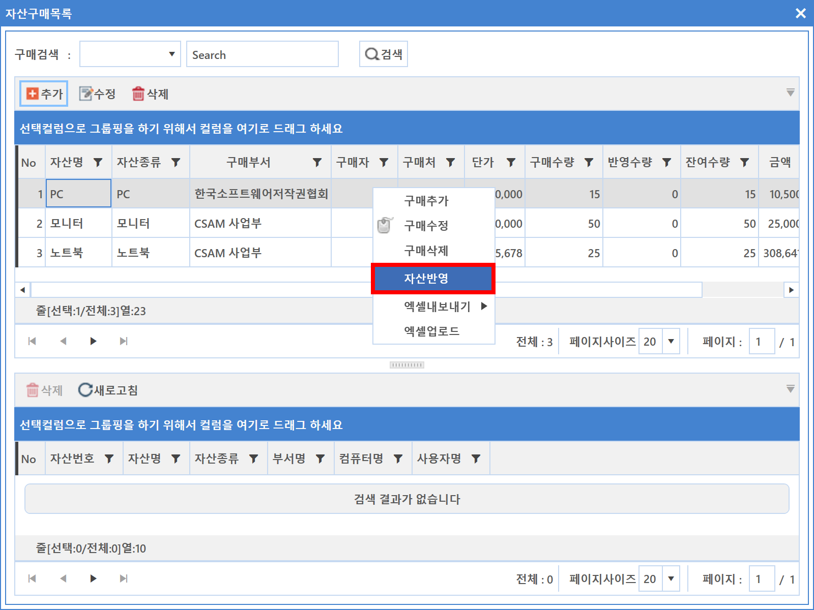

7-1-2. 구매목록
7-1-2. 구매목록
Source: https://www.sweeper.or.kr/etc/manual/716.html
7-1-2. 구매목록


회사에서 구매한 자산정보를 등록/편집 가능하도록하며 자산목록과 연계하여 구매현황 관리가 용이합니다.
대부분 기업에서 구매내용과 실제운영자산 연계가 불가능하여 이력 및 실제 사용에 대한 현실적 어려움에 직면해 있습니다.
SWeeper 자산관리는 이러한 부분을 자산목록 연계 기능을 통해 간단한 회계(감가상각법 적용)를 적용하여 효과적인 자산관리가 될 수 있도록 구현되어 있습니다.
구매목록은 자산관리 기본 정보이므로 무엇보다 중요하며 최대한 자세한 정보를 담을 수 있어야 합니다.
연계된 자산 일부가 확인되지 않더라도 이러한 정보 또한 자산관리 부분에서는 중요한 정보로 활용될 수 있습니다.


개별등록 방법
-
추가 버튼을 클릭합니다. 구매추가 화면이 팝업되면 해당 정보를 입력합니다.

-
구매번호 : 관리하는 구매번호가 있을 경우 입력하며 생성 버튼을 클릭하면 자동생성합니다.
-
기존에 있는 구매번호와 중복되지 않는 정보를 입력해야 합니다.
-
회사명 : 거래처 목록에서 선택합니다. 없을 경우 [거래처 목록]에서 추가합니다.
- 부서이름 : 구매부서를 선택합니다.
-
감가상각법 : 회사 감가상각법 기준을 확인하여 해당하는 방법으로 선택합니다.
-
입력이 완료되면 확인 버튼을 클릭합니다.
엑셀 업로드 방법
-
화면에 마우스 우클릭하여 엑셀업로드 메뉴를 선택합니다.

-
엑셀업로드 Wizard가 팝업되며 "엑셀업로드" 버튼을 클릭하여 해당 Excel 파일을 선택합니다.
-
Excel 양식이 필요한 경우 Wizard에서 다운로드 받아 편집하신 후 저장하시면 됩니다.

-
정보가 로드된 것이 확인되면 다음 버튼을 클릭합니다. 업로드 확인에 대한 메시지가 팝업되며 확인 버튼을 클릭합니다.
- 업로드 처리 결과를 확인한 뒤 완료 버튼을 클릭합니다.
- 화면에서 업로드된 내용을 확인합니다.
연계자산 설정방법
- 구매목록을 선택한 뒤 마우스 우클릭하여 자산 반영 메뉴를 클릭합니다.

-
"자산에 반영하시겠습니까?" 메시지가 팝업되면 확인 버튼을 클릭합니다.
-
자산 반영 기능은 구매된 정보를 바탕으로 자산종류와 수량을 참고하여 구매수량 만큼 연계자산을 자동생성합니다.

주의사항
엑셀 업로드 양식에 맞아야 정상업로드 됩니다. 혹시 에러가 발생했다면 [엑셀 업로드 오류] 를 참고바랍니다.
© Copyright SWeeper Inc.. All Rights Reserved